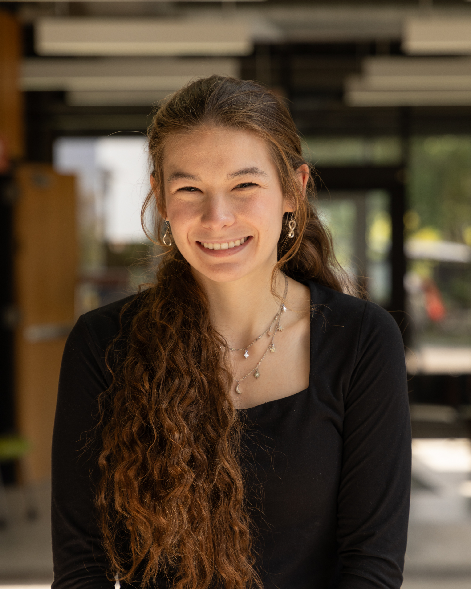

Get to Know Us
Claire O'Farrell

Claire is a second year Computer Science Major at RIT. She took an interest in programming in the 4th grade and has stuck with it ever since. Additionally, she is very interested in the arts and hoping to pursue a career that merges both Computer Science and Art in a satisfying way. Her contributions to this project are largely the survey.
Kathryn Eckert
Kathryn is a second year Software Engineering major and a Girls Who Code alum. She began her Tech journey at the age of twelve when she started teaching herself python. Her current hobbies, in addition to software development, include volleyball, piano, and writing. What she contributed most to on the project is the website design.
Lilly Rowland
Lilly is a second year majoring in Bioinformatics and Computational Biology with a minor in computer science. Her journey in tech began when she joined her middle school robotics team in sixth grade. Since then, she has explored the various avenues in computer science. She worked primarily on data analysis, flask, and data preparation.
>